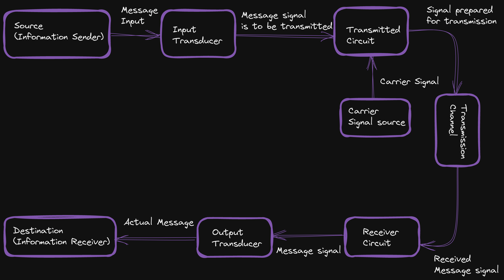
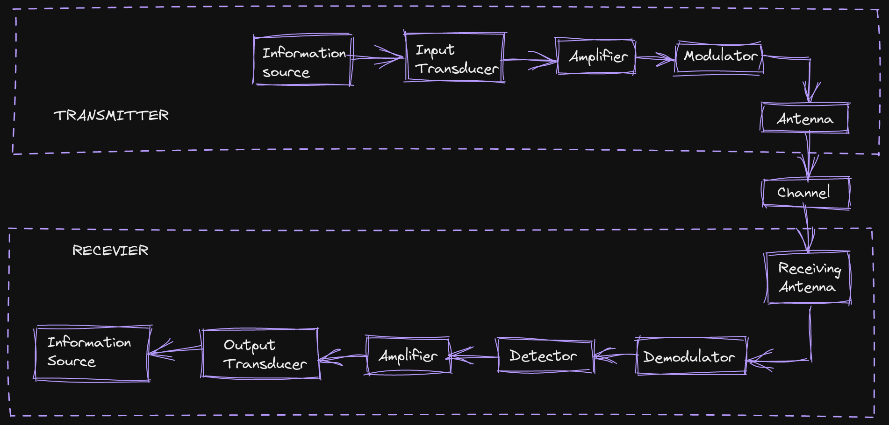
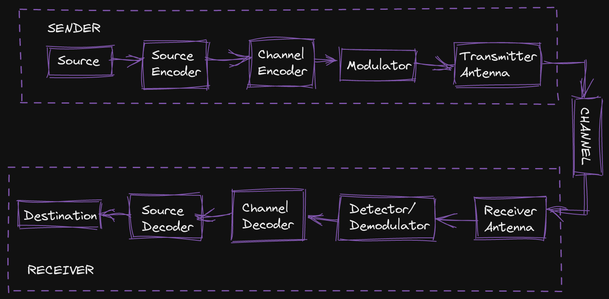
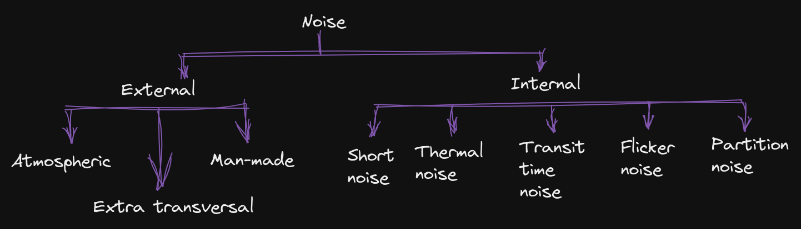
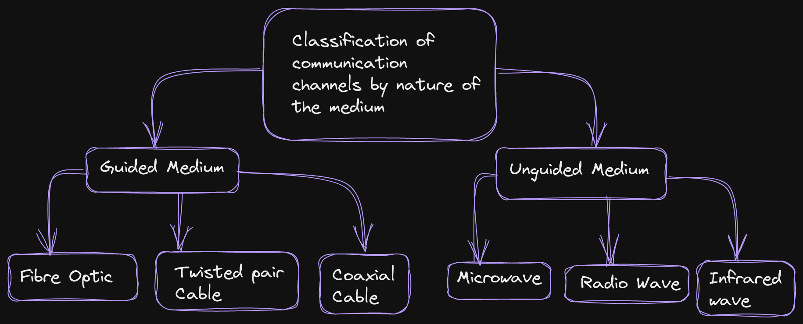
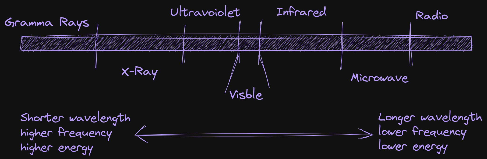
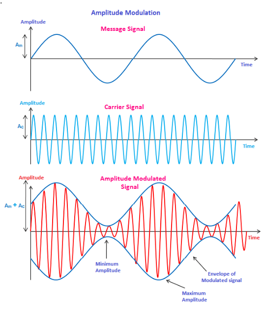
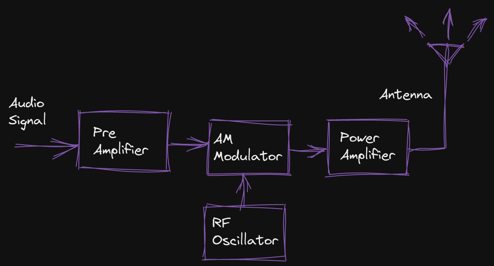
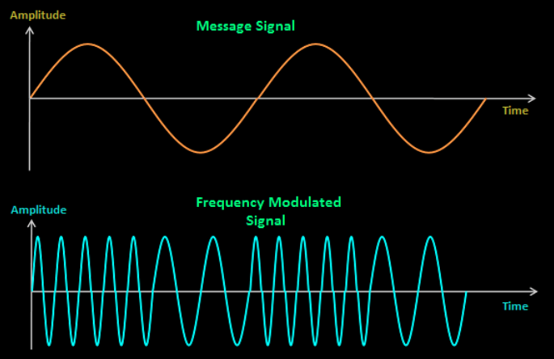
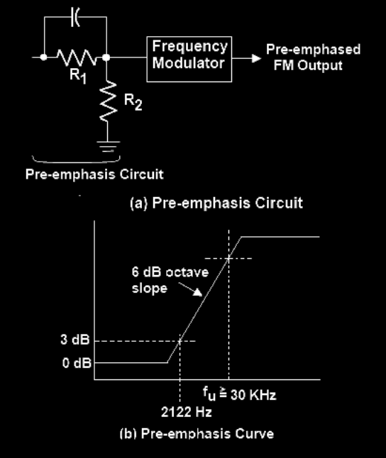

PCOM
Basics of analog communication and digital communication systems

Analog Communication

- Continuous signal repesentaion of information, such as sound, image or video.
- Singnal is transmitted over continuous range of frequencies, usually represented by sine wave.
- Example: analog television, analog radio brodcasting, analog telephone systems.
Application
- Broadcasting Analog signals are still used for broadcasting TV and radio signals.
- Audio transmission Analog signals are used for transmitting audio signals in analog audio devices, such as analog tape recorders and turntables.
- Telephony Analog signals are used for transmitting voice signals in traditional telephone networks.
- Musical instruments Some musical instruments, such as analog synthesizers, use analog signals to produce sound.
- Control systems Analog signals are used in control systems, such as analog servo systems, to control the position and speed of motors.
- Medical equipment Analog signals are used in medical equipment, such as ECG and EEG machines, to measure and monitor biological signals.
- Weather measurement Analog signals are used in weather measurement instruments, such as barometers, thermometers, and hygrometers, to measure various weather parameters.
Advantages
- Simplicity- Analog communication systems are simpler in design and implementaion compared to digital system. This makes them less expensive and easier to build.
- Bandwidth effciency - Analog communication system can transmit a large amount of information over wide frequency range, making them bandwidth effcient. This is because analog signals can be modulated over a continuos range of frequencies.
- Cost-effective - Analog communication system are less expensive to implement and maintain compared to digital systems. This is due to their simple design and lower processing requirements.
- Legacy systems - Many analog communication system have been in use for many years and are well established. This makes them easier to integrate into existing infrastructure and easier to maintain.
- High compatibility - Analog signals are compatible with a wide range of equipment and systems, making it easier to interconnect different devices and systems.
Disadvantages
- Singnal degradation - Analog signals can degrade over long distances due to noise and interference, resulting in reduction in signal quality.
- Vulnerability to interference - Analog signals are vulnerable to external interference such as electrical noise and other signals in the same frequency range, which can cause signal distortion and degradation.
- Limited signal processing - Analog communication system have limited signal processing capabilities, making it difficult to coreect for error and enhance signal quality.
- No error detection - Analog communication system do not have built-in error detection capabilities, making it difficult to detect and correct transmission errors.
- Insecurity - Analog communication system are less secure compared to digital system, as it easier for unauthorized parties to intercept and eavesdrop on analog signals.
- Inefficient use of bandwidth - Analog communication system can be less efficient in their use of bandwidth compared to digital systems, as they require a continuous range of frequencies to transmit information.
Digital communication

- Discrete signal representation of information, usually in binary form (1s and 0s).
- Signals are transmitted in stepwise manner.
- Examples: digital television, internet, mobile phones, digital radio broadcasting.
Applications
- Data transmission Digital communication systems are widely used for data transmission over the internet and other communication networks.
- Wireless communication Digital communication is used in wireless communication systems such as mobile phones, Wi-Fi, and satellite communication.
- Broadcasting Digital communication is used for broadcasting digital signals such as digital TV and radio.
- Computer networks Digital communication is used in computer networks to transfer data between computers and other devices.
- Remote control Digital communication is used in remote control systems to control various devices remotely.
- Industrial control Digital communication is used in industrial control systems to control and monitor industrial processes.
- Military communication Digital communication is used in military communication systems for secure communication and data transmission.
- Medical equipment Digital communication is used in medical equipment such as digital X-rays and CT scans.
- Navigation Digital communication is used in navigation systems such as GPS and GLONASS.
- Consumer electronics Digital communication is used in consumer electronics such as digital cameras, DVD players, and gaming devices.
Advantages
- Immunity to noise interference - Digital signals are less susceptable to external noise and interference, as digital signals are transmitted as binary data (1s and 0s), which can be accuratily reconstructed even in the presence of some noise or interference.
- More secure transmission - Digital communication system provide a more secure transmission of information, as the binary data can be encrypted to prevent unauthorized access.
- More flexible signal processing - Digital communication system provide more flexible signal processing capabilities, such as error correction, data compraession, and encrypthon.
- Error detection adn correction - Digital communication systems have built-in error detection and correction capabilities, making it easier to detect and correct transmission errors.
- Better utilization of bandwidth - Digital communication system are more efficient in their use of bandwidth, as they transmit information as discrete signals (1s and 0s), which can be encoded in more compact form.
- Ease of integration with computer systems - Digital communication system are easier to integrate with computer systems, as digital signals can easily processed by computers.
- Wide range of applications - Digital communication has a wide range of application, from voice and data transmission over the internet to video conferencing and digital television.
Disadvantages
- Complex techonology - Digital communication system require more complex techonology compared to analog systems, making them more difficult to design, build, and maintain.
- Higher cost - Digital communication system are more expensive to implement and maintain compared to analog ystem, due to the need for more complex technology and higher processing requirements.
- Lower bandwidth efficiency - Digital communication systems can be less efficient in their use of bandwidth compared to analog systems, as they require more data to represent the same information.
- Latency - Digital communication systems can introduce latency in data transmission, as the binary data must be processed and transmitted in a stepwise manner.
- Compatibility issues - Digital communication systems can have compatibility issues with older equipment or systems that are not designed to handle digital signals.
- Dependence - on electronics: Digital communication systems are heavily dependent on electronics and digital processing, making them more susceptible to technical failures.
Explain need of modulation. Justify it with example.
Modulation is the process of encoding information onto a carrier signal for the purpose of transmitting it over a communication channel. The need for modulation arises because the information to be transmitted is usually in the form of a low-frequency signal, while the communication channel can only support high-frequency signals. By encoding the low-frequency information onto a high-frequency carrier signal, the information can be transmitted over the communication channel more efficiently.
For example, consider the transmission of audio signals over a radio channel. The audio signals to be transmitted have a frequency range of 20 Hz to 20,000 Hz, which is too low for efficient transmission over a radio channel. To transmit the audio signals over the radio channel, the audio signals are modulated onto a high-frequency carrier signal, typically in the range of 87.5 MHz to 108 MHz. The modulated signal can then be transmitted over the radio channel, and the original audio signals can be recovered by demodulating the received signal.
In summary, modulation is necessary to enable the efficient transmission of low-frequency signals over communication channels that only support high-frequency signals.
Define the following terms.
Noise Figure
The noise figure is a measure of the degradation of the signal-to-noise ration (SNR) that occurs in a communication sytem due to thermal noise, amplification noise, and other sources of nise. It is expressed in decibels(dB) and represents the ratio of the input SNR to the output SNR of a system.
Noise Temperature
The noise temperature is a physical quantity that describes the amount of thermal noise generated by a system, in terms of the equivalent temperature of a resistor generating the same amount of noise power. It is used to characterize the performance of communication systems, particularly amplifiers, and is often expressed in kelvin (K).
Noise Bandwidth
The noise bandwidth is the bandwidth over which thermal noise is generated in a communication system. It is a measure of the frequency range over which the noise power is generated and is often used in the calculation of noise figure and noise temperature.
Noise Voltage
The noise voltage is the electrical voltage that is generated by thermal noise in a system. It is a measure of the random fluctuation in the voltage that result from thermal noise and can be expressed in terms of a root mean square (RMS) value.
Modulation
Modulation is the process of encoding information onto a carrier signal for the purpose of transmitting it over a communication channel. Modulation is performed by modifying the amplitude, frequency, or phase of the carrier signal in a manner that is proportional to the information signal, so that the information can be transmitted over the communication channel. The process of recovering the original information from the modulated signal is known as demodulation.
Type of Noise

- Short Noise it is a type of electronic noise which generated due to random fluctuations in the flow of electric current in conductor. Short noise is Poisson process, which means that its occurrence is not predictable and its amplitude is proportional to the square root of average current. For example, the short noise in a resistor is proportional to th square root of the current flowing through it.
- Thermal Noise it is also know as Johnson-Nyquist noise of Johnson noise. It is generated due to random thermal motion of electrons in a conductor. The thermal noise is proportional to the temperature of the conductor and the resistance of the conductor. For example, the thermal noise is resistor is proportional to the temperature of the resistor and its resistance.
- Transit Time Noise - It is generated due to the random fluctuatons in the transit time of electrons passing through a devic such a bipolar dunction transistor or a field-effect transistor. The transit time noise is proportional to the square root of the frequency of the signal being transmitted.
- Flicker Noise it is also know as 1/f noise. it is generated due to the random fluctuation in vurrent flow in a conductor and is proportional to the reciprocal of the frequency of the signal. Flicker noise is most pronounced at low frequencies.
- Partition Noise it is generated due to the random fluctuation in the number of carriers in a particular energy level of a semiconductor device. Partition noise is proportional to the square root of the number of carriers in the energy level.
AM and FM
AM
- Broadcasting - One of the main uses of AM is broadcasting, especially in the long distance transmission of voice and music
- Shortwave Radio - AM is widely used in shortwave radio commuication, where it can readch over long distances.
FM
- Broadcasting - FM is widely used in radio broadcasting, where it prefferred over AM for its higher quality audio transmission.
Types of communication Channel

Guided communication channels
Refer to channels that require a physical medium to transmit information. Examples of physical media include coaxial cables, fiber optics, and twisted pair wires.
Fiber optic uses light to transmit data, made of glass/plastic core surrounded by protective cladding layer. Used for broadband internet, cable TV, telephone communication.
Twisted pair uses tow insulated wires twisted together to reduce interference. Commonly used for telephone, Ethernet networks, data communication.
Coaxial conists of central copper core surrounded by insulation and metal shield to reduce interference. Used for cable TV, broadband internet, high-frequency signal transmission.
Unguided commuication channls
This are communiccation channels that do not require a physical medium to transmit information. Insted they rely on open air or open space to transmit information.
Radio waves are a type of unguided communication channel that use electromagnetic waves to transmit information. Examples of devices that use radio waves include radio and television broadcasting station, cell phone towers, and Wifi routers.
Infrared is a type of unguided communication channel that uses infrared light to transmit inforamtion. Example of devices that use infrared include remote controls for television and other electronics.
Microwave is a type of unguided communication channel that uses microwave frequencies to transmit information. Examples of devices that use microwave include satellite communication systems, microwave ovens, and Wi-Fi networks.
Satellite Satellite is a type of unguided communication channel that uses satellites to transmit information. Examples of devices that use satellites include satellite phones, satellite TV, and GPS systems.
Fourier Series
Fourier Transform
The fourier transform is a mathematical tool used to analyze signals and transform them into the frequency domain. It is a way of representing signals as the of their constituent sinusoidal frequencies, allowing us to understand the frequency content of signals and perform operations such as filtering and compression.
The fouier transform is widely used in various fields, including signal processing, image processing, audio processing, control systems, and more.
It is used to analyze and understand the frequency content of signals, filter signals, and perform other operations on signals.
- Formula $f(x) = \int^\infty_{-\infty} F(k)e^{2\pi ikx}dk$
- Lineaity Transform The fourier transform is linear operation, which means that if a function is linear combination of other function, then its Fourier Transform is also linear combination of their Fourier Transforms. This property allows for a straightforward and mathematical representation of signals.
- Duality The Fourier Transform has a duality property, which means that the Fourier Transform of a function and its inverse Fourier Transform are realted. This property enables the transformation of signal from the frequency its inverse Fourier Transform are realted. This property enables the transformation of a signal from the frequency domain back to the time domain, providing a complete representaion of the signal.
- Modulation Property The Fourier Transform also has modulation property, which states that multiplying a signal in the time domain by a complex exponential results in phase shift in the frequency domain. This property enables the representation of signals with phase information, providing a more complete description of the signal.
- Time Shifting The Fourier Transform of a time-shifted signal can be found by multiplying the Fourier Transform of the original signal by a complex exponential. This results in a phase shift in the frequency domain, which corresponds to a time shift in the time domain.
- Frequency Shifting The Fourier Transform of a frequency-shifted signal can be found by multiplying the Fourier Transform of the original signal by a complex exponential. This results in a phase shift in the frequency domain, which corresponds to a frequency shift in the time domain.
- Fourier Transform of Unit Step Function The Fourier Transform of the unit step function is a sinc function in the frequency domain. The sinc function has an infinite range and represents the frequencies present in the signal. Fourier Transform of Delta Function: The Fourier Transform of the delta function is a constant in the frequency domain. The constant represents the amplitude of the frequency present in the signal.
- Fourier Transform of Gate Function The Fourier Transform of a gate function, also known as a rectangular pulse, is a sinc function in the frequency domain. The sinc function has an infinite range and represents the frequencies present in the signal.
Explain Electromagnetic Spectrum and its Application

The Electromagnetic Spectrum is the range of all frequencies of electromagnetic radiation. It includes radio waves, microwaves, infrared radiation, visible light, ultraviolet radiation, X-rays, and gamma rays. The Electromagnetic Spectrum can be divided into the following parts:
- Radio Waves They have the longest wavelengths and the lowest frequencies in the electromagnetic spectrum. They are used in communication technologies like television and radio broadcasting, cell phones, and GPS.
- Microwaves They have a higher frequency than radio waves and are used in communication technologies like WiFi, microwave ovens, and radar.
- Infrared Radiation It has a higher frequency than microwaves and is used in heating, remote control, and night vision.
- Visible Light It is the portion of the electromagnetic spectrum that is visible to the human eye and is used for illumination and color recognition.
- Ultraviolet Radiation It has a higher frequency than visible light and is used in sterilization, UV water purification, and sun tanning.
- X-rays They have a higher frequency than ultraviolet radiation and are used in medical imaging and security scanning.
- Gamma Rays They have the highest frequency and the shortest wavelength in the electromagnetic spectrum and are used in medical treatment and scientific research.
The Electromagnetic Spectrum is a continuous range of frequencies and each part of the spectrum has different properties and uses. Understanding the electromagnetic spectrum is important for communication technologies, medicine, and many other fields.
Amplitude Modulation

- Amplitude modulation is process by which the wave signal is transmitted by modulationg the amplitude of the carrier signal.
- It is often called AM and is commonly used in transmitting a piece of information through a radio carrier wave.
- Amplitude modulation is mostly used in the form of electronic communication.
- AM is used in many types of communication systems, including radio broadcasting television broadcasting, and military communications. AM is also used in some radar and navigation system.
Application of AM
- Broadcasting - AM readio stations are used for commercial and public broadcasting, providing music, news, sports, and other programming.
- Military Communication - AM signals are used in military communications, especially in aircraft and maritime.
- Emergency Broadcasting - AM radio can be used as an emergency boadcast system during natural disasters or other critical events.
- Two-way Radio Communication - AM signals are used in two-way radio comunication for short-range commuication between vahicles, boats, and handheld devices.
- Wireless Medical Devices - AM signals are used in some wireless medical devices, such as electrocardiogram (ECG) machines, for transmitting signals between patient and physician.
- Remote Control System - AM signals are used in remote control system for controlling toys, model cars, and other low power devices.
AM Transmitter

- An amplitude modulation (AM) tansmitter is a device that generates an amplitude modulated signal from a baseband input signal.
- The main components of an AM transmitter are the modulator, oscillator, and power amplifier.
- The modulator takes the baseband input signal and modulates it with carrier wave. The carrier wave is typically generated by oscillator.
- The moudlated signal is then amplified by a power amplifier and transmitted over the airwaves.
- The modulator of an AM transmitter typically conists of a product modulator circuit, which multiplies the baseband signal by sinusoidal carrier wave. The resulting modulated signal is a combination of the carrier wave and the baseband signal.
- The oscillator of an AM transmitter generates the carrier wave that is used to modulate the baseband signal. The frequency of the carrier wave is typically a fixed value that is chose based on the frequency range of the desired transmission.
Steps are involved in the working of an AM transmitter
- Modulation The baseband signal is multiplied with the carrier signal to produce the modulated signal. The modulated signal has the information carried by the baseband signal embedded in its amplitude.
- Amplification The modulated signal is then amplified to increase its power to a level suitable for transmission.
- Filtering The amplified signal is then passed through a filter to remove any unwanted frequency components that may have been introduced during the amplification stage.
- Antenna The filtered signal is then transmitted to the receiver through an antenna. The antenna radiates the signal into the atmosphere, which is then received by the receiver.
The modulated signal produced by the AM transmitter is received by the AM receiver, where it is demodulated to retrieve the original baseband signal.
Uses fo AM
- Broadcasting One of the main uses of AM is broadcasting, especially in the long-distance transmission of voice and music.
- Shortwave Radio AM is widely used in shortwave radio communication, where it can reach over long distances.
- Two-way Communication AM is used in two-way communication systems, such as aircraft, marine, and CB (Citizen Band) radio.
- Telemetry AM is used in telemetry systems for transmitting data from remote locations to a central monitoring station.
Frequency Modulation(FM)
 Frequency Modulation (FM) is a type of analog modulation technique used to transmit audio and voice signals over long distances. In this method, the frequency of the carrier signal is varied in proportion to the amplitude of the modulating signal. The principles of Frequency Modulation are as follows:
- Modulating Signal The information to be transmitted is carried by the modulating signal, which is in the form of an audio signal.
- Carrier Signal The modulating signal is then applied to the carrier signal to produce the frequency modulated signal. The carrier signal is usually a high frequency signal.
- Deviation The amount by which the frequency of the carrier signal is changed is referred to as deviation. The deviation is proportional to the amplitude of the modulating signal.
- Modulated Frequency The modulated frequency of the carrier signal is given by the sum of the carrier frequency and the deviation. The modulated frequency is a function of the modulating signal amplitude.
- Bandwidth FM signals have a much wider bandwidth compared to AM signals. The bandwidth is proportional to the deviation and the highest audio frequency present in the modulating signal.
- Noise Immunity FM signals are less susceptible to noise compared to AM signals, as the frequency deviation is proportional to the modulating signal amplitude and not the carrier amplitude.
- Frequency Stability The frequency stability of the carrier signal is important for the proper functioning of FM systems. The frequency stability is maintained by using high-stability oscillators.
Pre-emphasis & de emphasis in FM

- Pre-emphasis It is a technique used to boost the high frequency components of an FM signal before transmission. The purpose of pre-emphasis is to counteract the effect of atmospheric noise and other forms of interference, which tend to reduce the high frequency components of an FM signal. The pre-emphasis circuit adds a high-pass filter to the audio signal, increasing the amplitude of the higher frequency components.
- De-emphasis It is the reverse process of pre-emphasis. After the FM signal has been received and demodulated, the de-emphasis circuit is used to restore the original audio signal. The de-emphasis circuit is a low-pass filter that reduces the amplitude of the higher frequency components. This is done to restore the original audio signal and to eliminate any residual noise or interference that may have been introduced during transmission.
In summary, pre-emphasis and de-emphasis are used to enhance the quality of an FM signal by emphasizing the high frequency components before transmission and de-emphasizing them after transmission.
Indirect method (Armstrong method) of FM generation.
The Indirect method or Armstrong method of FM generation involves generating a modulating signal and using it
to modulate a high-frequency carrier signal. This method uses the concept of phase modulation where the phase
of the carrier signal is varied in accordance with the amplitude of the modulating signal. The steps involved in
generating FM using this method are as follows:
- Generation of modulating signal The modulating signal is a low-frequency signal that is to be used to modulate the carrier signal. This signal could be either audio or message signal.
- Amplitude Limiting The modulating signal is amplitude limited to ensure that the modulating signal does not exceed a certain amplitude level. This is done to prevent over-modulation.
- Mixing the Modulating and Carrier Signals The modulated signal is then mixed with a high-frequency carrier signal. The carrier signal is generated by an oscillator, and its frequency is much higher than the frequency of the modulating signal.
- Phase Modulation The phase of the carrier signal is varied in accordance with the amplitude of the modulating signal. This process is known as phase modulation and results in the generation of FM signal.
- Detection of FM Signal The generated FM signal is then passed through a demodulator, which converts it back to the original modulating signal.
This method of FM generation is also known as Indirect FM generation as it involves generating FM indirectly by modulating a high-frequency carrier signal with the modulating signal. The advantage of this method over Direct FM generation is that it is more stable and efficient.
Uses of FM
- Broadcasting FM is widely used in radio broadcasting, where it is preferred over AM for its higher quality audio transmission.
- Mobile Communication FM is widely used in mobile communication systems, such as cell phones and walkie- talkies, due to its better resistance to interference.
- TV Broadcasting FM is used in TV broadcasting for sound transmission, in place of AM.
- Satellite Communication FM is used in satellite communication for higher-quality voice and data transmission.